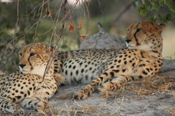

Maureen Fitzsimon's wildlife tour of Southern Africa 2013
Part Two: Botswana, Game Parks Galore
Tuesday 30 April 2013
Cape Town -> Johanesburg -> Maun -> Kwara Camp
It's no wonder Gay and I were thrown out of the men's toilets!
We left the Commodore Hotel at 6am, saying goodbye to Granville, our excellent guide. That day, we had rung MackAir to find out about luggage restrictions. An upper limit of 20kg was allowed for everything- coats, carry-on bags, handbags etc., so, we also Googled Joburg airport luggage storage, planning to dump a small bag of presents etc., there to reduce baggage weight.
First hitch: Gay and Bob had packed their necessary provisions in one bag, weighing 28kg, and the stuff to be dumped at Joburg in their other bag. British Airways, flying us Cape Town to Johannesburg would permit 2 people to share a luggage limit, but not Air Botswana, flying us Joburg to Maun. It had to be 20 Kg each, not one 28kg bag between two people!
Emergency shopping trip and Gay bought a bag at Cape Town airport, to shed 8kgs to a second bag. Luckily, such shops are open before 7am!
On a tight-ish schedule in Joburg, Gay and I rushed to the luggage storage place, luckily leaving the slow coach husbands to have a rest. Our other fellow travellers decided to just take the risk of being a few kilos over. The web site for the storage place says they take Visa and MasterCard. No go! They'd only take full payment for 9 days storage in cash - 880 Rand, which I didn't have.
Leaving Gay to mind the bags, I ran to the ATM upstairs. Out of order! 500 metre lightning sprint to the next one. Those gym sessions do come in handy.
Returning to Gay, it turned out the luggage people would take US dollars! She had paid up - $125 US dollars, when the exchange rate should have meant a charge of $88 US dollars! And, to boot, I was left with $880 Rand in cash.
Poor Gay was having one of those moments, when travel does not seem a lot of fun. All this time, we were both dying to use the loo, but hadn't time. Hence, when we saw the symbol for the "Happy Room" we made a dive for it!
"This is the Men's!!" they screeched. "Tell someone who cares," we replied!
We made it to the plane. Sigh!
Arriving at the teeny weeny Maun International Airport, Botswana, we gave them full marks for fastidiously completing customs and security protocols. Slowly. Oh so slowly!
Wendy had been hotly anticipating our 13-seater charted flight to Kwara Camp near Moremi Game Reserve. That is, she was hot under the collar with panic! Full marks to her! She did it!
We eleven were in a 13 seater plane. And guess what? They didn't bother to weigh the luggage! All that grief and expense storing our extra few kilograms was for nought! Those in our group who chanced a few extra kilos won the day!
Gay, Mike and I, sat up the front, trying to learn how to fly a plane. Wendy sat up the back and thoroughly enjoyed viewing her shoes for most of the journey.
From the air, the Okavango delta, which is 900 metres above sea level, looked like a huge flat swamp. There were many waterholes, already beginning to turn crusty with dryness at the edges, as the rainy season had now finished.
The pilot looked very young, indeed. Considering we were in a small plane, the flight was not too bumpy, and the landing was perfect.
A rich, white, South African leases the land our camp stands on. The friendly staff who greeted us at Kwara camp were all native to Botswana.
I noticed that most of the staff seemed very well fed. All meals here are shared at a big table, with staff and guests eating together, and enjoying the same meals. Only our group is in camp today.
Orientation included signing a document that you would not walk to your tent after dark without a guide accompanying you. The camp has no fencing, and wild animals wander through unhindered. Hippos live in the camp lagoon. Dire warnings were given that our tents had to be securely closed, as the Baboons were very clever at breaking and entering.
We were shown to our lovely tents, which have a huge king sized bed, and ensuite with outdoor shower. They are really quite fantastic.
Within minutes of dumping our luggage, we had "high tea", and were then on board the same type of Toyota open top 4WDs, as we had used at Mohlabetsi in Kruger.

Resting Cheetahs, Kwara Camp
Talk about tick off the wildlife!
We soon were metres away from several wild cheetahs, elephants, zebras, giraffes, impala, kudu, and goodness knows how many types of birds! It was mind-blowing!
Darkness fell, and the air chilled, after a very warm and sunny day. We continued to spotlight for quite some time.
Then... I think I jinxed another 4WD! Bridges here are comprised of 2 car tracks, made out of little logs. They seem to be about 50 metres long.
Halfway across one of these flimsy bridges, in the cold and dark, we punctured a tyre. As the water below was probably teeming with crocodiles and hippos, the guides slowly nursed the car off the bridge. Wendy and I tried to hold our ground and stay in the vehicle. Having eaten so much great food on this trip, the guides found they really couldn't jack it up until we alighted.
Wendy's imagination ran riot, listening to the sounds of the wildlife in the starry night!
The guides were brilliant, and had the new wheel on in a jiffy. As a plus, we were not mauled by hyenas, or eaten by crocs!
Returning to camp after 8pm, we sat all enjoyed a gourmet 3 course meal, with the staff fielding our many questions as we ate.
We had a cosy night in our lovely tent, made more interesting by our not finding the battery operated light switch in the loo!
Wednesday 1 May 2013
Kwara Camp
For the first time here, we thought we were going to die!
Wendy wanted a photo of a mother and baby elephant. We found a large breeding herd of elephants, and followed them as they approached a waterhole. Our guide pulled off the track where we would have a perfect view of the herd, illuminated by sunlight as the crossed open space to our left. There was water in front of us but our escape route was a track to our right. These fellows are clever vegemites! As the group passed on our left, a single elephant appeared to our right- the ESCAPE route! From the dense foliage behind, I heard...crash! Crash! CRASH! What the *#@& was that? I looked behind our OPEN 4WD and saw a (more or less) 25 foot high elephant metres away, with ears flared and HUGE tusks menacing.
Forget getting a photo! Wendy and I clutched each other, said a last prayer, and tried to dive under the seat!
Apparently, the protocol, when the clever B....s surround you, AND CUT OFF THE ESCAPE ROUTE! is that one is supposed to shut up and not move. Whimpering repeatedly "Can we please get out of here" or "I want to go home", is not the done thing!
This HUGE elephant pulled back into the dense bushes. Only her tusks were visible. Wendy and I were preparing for her to charge. We were in the middle seats, and Wendy's husband Mike, in the back seat. Mikes 2 and 3 were in the front. He took pity on us. By this time, Wendy and I were chanting "go, go go....gun it!" Our guides, Master and TT, couldn't cope with us any more, and did gun it!
The lecture they gave us was fairly gentle! If confronted, be QUIET. Stay STILL! As punishment, we are worried that our game viewing might now be restricted to butterflies.
Anyway, all of this was this afternoon and evening.
For the first time in 30 years, I yelled at Mike to wear sunscreen, which he never does. In fact, he has refused to wear sunscreen ever since I met him! I know we are not going to be the prettiest parents of the groom in 10 days� time. However, despite sunscreen, I have had a red peeling nose repeatedly, thanks to long game drives. His skin is fairer, and he looks redder than the Communists.
Like that ad on TV, thanks to wearing sunglasses, I have a tan on the rest of my face and white goggles around my eyes. The parents of the groom will be both peeling like snakes, and one looking like an owl!
This morning we had a 5 hour game drive, and saw EVERYTHING! Most impressive was following a group of lions over quite some distance from only a couple of metres away. Add baboons, squirrels, warthogs, zebras, giraffe, hippos, elephants, tsessebe, red lechwe, kudu, jackals, hyenas, hippos, crocs, all manner of birdlife, including lots of guinea fowls and Maribou and other stork, impala (we don't even turn our heads for these anymore!), and the rarest - a pack of African wild dogs.
A pack of warthog casually strolled past our tent this afternoon. As you do!
Driving through the bush, we hope we are receiving a good work out dodging prickle bushes, and keeping balance in the 4 WD. Like Fraser Island, most of the tracks are very sandy, rough, and heavy going.
Wendy starts each safari by making requests- like seeing lions, and finding elephants with babies. All of her wishes have been granted. She seems to find, however, that each animal delights in turning their rather cute backsides towards her. "My" animals are more the Michael Hutchence type- only showing one side of their profile.
Driving through the bush we saw many "sausage fruit" trees. This fruit is about 30 cm long and looks quite weighty. After the incident where the light fitting fell out of the ceiling on top of me, I have been ready to employ my lightening reflexes to combat these fellas.
After traditional "sundowner" drinks this evening, we headed back to camp and spotted lots and lots of African Pike fish jumping out of the water.
Then a great 3 course meal. We were joined by 4 new guests from Switzerland, who, of course, spoke perfect English.
Big day tomorrow. Safari in the morning, then on to a new camp
Thursday 2 May 2013
Kwara Camp -> Xakanaxa Camp
Noises in the night....make for less than ideal sleep. Lots of noises. Dreams of packs of elephants trampling our tent and crushing us to death...didn't help much, either. Nonplussed, Mike snored. As usual!
Woke to a beautiful dawn. Coffee was had by the campfire again, and off we set, requesting NO elephants.
Again, there were many birds, including Brown Hornbills and African Hawk Eagles. The Red Kingfisher were very nice, indeed.
We ticked off lots of giraffe, including a mother and baby, then Reedbuck, and saw a black backed jackal only a few metres away. Warthogs darted amongst the grass, and we saw tell-tale tracks along the "Hippo Highway".
Kudu stared boldly into our lenses. A pack of zebra was quite nonchalant in our presence. Tsessebe were aplenty, and we saw countless "MacDonalds burgers of the bush" or �Fast-food for lions�- the ever present Impala. Then on the way back to Kwara camp we saw a very skittish Buffalo and a Wildebeest.
A quick shower and pack, followed by brunch, and we said goodbye to the lovely staff at Kwara camp. Most of these workers live 3 months in the camp, and then fly home for one month. They have days rostered off during the 3 month shift, but cannot leave the camp. Almost all seemed to have families left behind. I suppose it is a secure and interesting job, and they have to take the good with the bad!
Back into the 4WDs and led by the Kwara guides, we made our way to the Okavango waterways, and piled into a large tinny with outboard motor for the 90 minute journey to Xakanaxa Camp.
The papyrus and water lilies (similar to Lotus flowers), was reminiscent of Egypt. However, in many parts, the stream was only a couple of metres wide. Then, towards the camp, the waterway was broad.
Wendy was at the edge, and became quite damp with spray. The cap to my new telephoto camera lens flew out of the camera and into the water - never to be seen again!
At one point, a hippo snorted and dived just beside our speeding boat. I had visions of the boat becoming air borne by an angry hippo - or maybe a croc! Otters are often seen along the banks. Unfortunately, not today. However, we did see a number Jakarna - water lily birds.
Arriving at Xakanaxa, we were delighted with our tents, the setting, and the vibe!
Am really cutting down on brekkies. These camps have morning and afternoon tea with homemade biscuits and cakes! Keeping to small tastes, so I still fit in my dress for the wedding in 8 days' time.
We saw a small croc sunning itself where we had afternoon tea. Headed off with a single driver/tracker/guide called "Water".
By this stage, we are like the locals; we feel we have seen it all. The birds are more interesting here, and we kicked off with a very nice Lilac Breasted Roller, followed by a couple of good looking Saddle Billed Stork.
Lots of Impala followed. We saw a particularly large group - maybe thirty animals - only one a male. It is mating season. Yesterday, a leopard took out the male Impala who was head of this harem. The mourning period lasted 20 minutes, the new male moved in, and it was business as usual. I have to say, I've encountered this sort of thing with patients!
The male Impala at the head of the harem doesn't need a gym membership. He has to folk dance with all of the females and run around constantly, keeping them all together. All of the offspring are born at the same time, making it easier for some babies to survive predators.
In Kruger we had seen a herd of buffalo, maybe numbering 30. Today, we came across a huge herd - easily 100 animals.
We spent quite a bit of time following a lion, who was stalking a buffalo who was slightly separated from the herd. What a wimp! We know that the buffalo, was a monstrous chap, but really, the lion was a lazy fellow. His scars were probably from previous buffalo encounters.
As this camp is in Moremi National park, rather than a private reserve bordering a park, we have to return to base by 6.30pm; government law. So, we gave up on the cowardly lion. On the way back to camp, we saw a big breeding herd of elephants. Wendy kept chanting "Keep driving. Keep driving." Luckily for her, we had run out of time.
Once again, we have to be escorted to and from our tent after dark. We are right on the river. This place has an electric wire surrounding the camp, which deters the elephants. Aaah! Then, we were told that the hippos from the river might be a teensy problem. Guess which animal kills more people than any other in Africa? A hint... It starts with a "H"!
Friday 3 May 2013
Xakanaxa Camp
You know those moments when everyone stops talking, and a single voice is left booming across the silence.... "I'm just so hot in bed!" Yes, that was Wendy! The lady has talent.
Although the nights are 6°C, our doonas in the tent are very warm. I'm pretty hot in bed, myself!
We started off on another fine, but cool morning, doing another safari. (Our twelfth - we are practically professionals.) Wake up shouts happened at our tent at 5.45 (kinder than the last camp), and off by 6.30am with our guide, Water.
Gay rested back at camp. She became the second injured member of our group yesterday. Trying to put on a coat, she rose slightly from her seat in the moving 4WD, just as the vehicle hit a monster bump. Her lower back was flung quite violently against a steel arm-rest beside her seat. Again I say: lucky she's a tough old bird!
Speaking of birds (of the feathery kind) many were seen on this safari, and Water knew the name of every one of them. A Sea Eagle, a Tawny Eagle, a Kuchal and a Giant Eagle Owl were just some of the birds added to the list to be ticked off.
More zebra, warthogs, giraffe, kudu, impala, waterbucks, a lion and buffalo were seen. A group of breeding elephants was viewed from very close range. Wendy and I were initially more than a trifle concerned. However this camp sees a lot more tourists than the last place, as it is in a public park, the Moremi National Park. Many individuals in private 4WDs meander around the tracks, just as people in Australia do on Fraser Island. Hence, these breeding elephants were more used to humans and did not become aggressive. Thank goodness!
A one week old baby elephant was among the group. So cute!
This afternoon, we went back on the tinny to cruise the Moanachira River. Our guide, Water, was at the helm. As usual, our group was split into two, with Mike Hales, Mike & Wendy Taylor, Mike and I in our boat (as happens with the 4WD).
Xakanaxa camp is on the banks of this river, the Moanachira. It is all part of the Okavango Delta.
We met up with the other half of our group eventually. Then, we went, two at a time, into Mokoros- traditional canoes made of hollowed out logs. A man called "Ray" steered ours with a long wooden pole. Like a gondola in Venice, but smaller and shakier. As luck would have it, we did not become crocodile food!
The river is really beautiful, with many water lilies and wonderful reflections. It was so peaceful. Back into the tinny and home to camp. A great afternoon.
Now, for another gourmet dinner. Life is tough!
Cheers, Maureen
Saturday 4 May 2013
Xakanaxa Camp, Moremi Game Reserve -> Chobe National Park
It was lucky that Joanne wasn't more off the track! Of course, she was just trying to be helpful!
After Gay's injury in the 4WD, Jo offered Gay drugs. I agreed that Celebrex would be appropriate. At Xakanaxa camp there were a couple of other guests. A South African chap, called Harold, sitting with Gay, at the other end of the dining table to me, was heard by me to be arguing that Celebrex was appropriate. He was also dishing out scads of advice to Mike Taylor about his coeliac disease.
My group know better than to spill the beans that I am a medico. They argued with Harold, that they knew what they were doing and had received medical advice! What I didn't know is that Gay showed Harold the medication packet.
This morning, Harold was bleating on about the Celebrex again. Turns out he is a Gastroenterologist. I decided to check the packet of the medicine given by Jo to Gay! Cephalexin! No wonder Harold was creating such a fuss! Jo had given Gay an antibiotic! No harm done. Not much help either! Poor Joanne - we gave her heaps!
Early morning safari at Xakanaxa with Water, our very expert tracker, yielded 3 lions, plenty of buffalo, (many with babies) and squillions of Impala. Birds were plentiful.
After a late breakfast, we left in 3 little planes. The smallest plane took Mike Hales, Mike and I, and the 2 larger planes had 4 of our group each.
Wendy surprised us all, including herself, by not being too scared at all. A little help from Gay, with a donated Mersyndol tablet, might have taken the edge off the terror. As you can see, this group are into drugs!
Our pilot, Matt, did an expert job. Cruising at 7500 feet, the journey took 75 minutes, and was very picturesque. Landing at Kasane, we were just a couple of kilometres from Chobe Safari Lodge, adjacent to Chobe National Park.
Here at Botswana's the north east corner, are borders with Zambia, Namibia and Zimbabwe.
The Hotel is large, with 82 rooms. If we had arrived here at the beginning of the trip, we would have thought it fantastic. However, we have been spoilt rotten by our 3 previous small, boutique camps, and find it less personal.
It's nice to have proper lights, and solid walls. We even have mosquito nets! A plumbing fault meant the choice of ablutions was either a freezing cold shower or a lovely, warm bath. Mike is not physically fantastic at wriggling in and out of bath tubs, so had a most invigorating experience.
Each hotel room has complimentary condoms. We were horrified to discover that one in four people in Botswana has HIV!
Our accommodation is right on the river, again. During the safari in the evening, we had our wish granted by Innocent, our guide- a hippopotamus on land. There are 120,000 elephants here, and we saw masses of them by the river. In fact, there are so many, that they are threatening their own existence. As these elephants are accustomed to people, we were able to view them from 3 metres away. The little baby elephants were super cute.
Giraffe, crocs, lots of birds, Impala, warthogs, baboons etc., were aplenty.
The seats in the 4WDs were like planks. Three hours of driving on rough roads with our ageing hips, backs and bottoms was not the most comfortable experience!
Dinner was a huge smorgasbord. Service was almost non-existent. Unusual for Africa!
Internet is now possible, but slow and expensive. Mike was almost ready for a Mental Health Plan, after no internet or phone for 4 days.
Will send some photos on Facebook!
Sunday 5 May 2013
Chobe National Park
Up at 5.15am for our last game safari - the fifteenth!
Mike and I ended up in a separate 4WD to the rest of the group, and this turned out to be a blessing! The seats were so much more comfortable.
It was really cold, and the blankets supplied were most welcome. The huge coat with a jumper inside, which I bought in Vietnam, has turned out to be wonderful for the game drives. Ditto...the warm hat and gloves! Charging through the bush in an open topped 4WD certainly adds a wind chill factor!
Today's highlight was a leopard, which was feasting on an impala. There were about eight 4WDs lined up for the spectacle!
Lots of hippos were in the river, and some completely out of the water, but not close up like yesterday. Giraffe, elephants, a black antelope, cute baby baboon with their mothers, buffalo, many birds and warthogs were easily found.
Today is again going to be warm and fine. Again! Only one day of rain in 18 days travel, so far! 3 more nights to go on this trip!
Thinking constantly about Brenda and Andy's wedding. Very exciting!
Cheers, Maureen.
Sunday 5 May (cont)
Chobe National Park
As I've said, we are enjoying some aspects of civilization, now that we are not in tents. For instance:
� After reception "fixed" the shower/bath situation:--- when you turn on the shower, it sprays cold water, while the bath tap pours scalding hot water at your feet.
� Dialing reception or anything else gives a constant engaged symbol. Etc.etc.,
Whinge! Whinge! We are just missing being spoilt in Kwara, Mohlabetsi and Xakanaxa!
This afternoon, we had a 3 hour cruise of the Chobe river. The guide was fantastic. Really knowlegeable. The weather was perfect. It was wonderfully comfortable: you could move around the boat, stand, sit etc., Furthermore, the wildlife was prolific. Giraffes, lots of crocs, scads of elephants, monitors, kudu, impala, baboons, hippos and birds, especially.
The elephants were playing in the water, as well as on the shore. A group of bird watchers with testosterone fueled lenses were poised with fingers on the shutters, as on a knife edge, (for ages!)waiting for a sea eagle to fly. We have drugs for that sort of thing, these days!
Wendy was like the Pied Piper. There were 10 or so children on our boat, ranging in ages from 3 to 14. School holidays in Namibia. They conversed in Africaans, but also spoke to us in perfect English. They flocked around Wendy, who had them entralled with her questions and stories.
The hippos opened their jaws for us, but refused to go ashore today.
We returned to a very nice buffet for dinner, and are all planning on 200 calorie a day diets when Nirvana in Africa comes to an end.
Tomorrow, we are off to Victoria Falls!
Tuesday 7 May 2013
Victoria Falls
Luckily, divorce is so much trouble!
We started the day very well, indeed! Victoria Falls Hotel is divine.
The sun was shining...AGAIN! We had a lovely breakfast, gazing out at the bridge over the falls, with huge clouds of water vapour rising like steam across the canyon.
There was a huge function on the lawn, outside our hotel window. Tables were beautifully set, with glasses and crockery gleaming in the morning sun.
Various singers, and other performers were tuning up, all dressed in fantastic African costumes.
It turned out that the Minister for Tourism in Zimbabwe, and lots of other dignatories were assembled here from all over Africa. The Victoria Falls Hotel is to host a World Tourism Conference, and this was a preliminary preparation. There were loads of speeches, in French and English.
The acrobats, drummers, and singers were wonderfully talented. An American lady and I applauded enthusiastically. The Big Toffs just stuck their noses in the air, and took such talent for granted. Mike preferred to check his email and Facebook.
At 11am our driver from yesterday, Brian, came to collect us. We were very pleased, as he seemed so much more cluey than Edna. All of the delegates left at the same time as us, and headed to the Falls!
We stopped to look at a Baobab tree with a girth of 30 metres and a height of 23 metres.
It is the end of the rainy season, and enough water is pouring over Victoria Falls in 3.5 days, to supply New York City with water for a year. These Falls are more than twice as high as Niagara, and much wider. They are 25 % higher than Iguassu, and are 1200 metres wide, compared to 1700 m in Iguassu. In short, there was a LOT of water, and we donned raincoats.
We were interviewed by Zimbabwe television, and asked the usual questions. I.e. where did you hear about Zimbabwe? Are you enjoying your holiday? What do you like? etc. ONLY GAY was asked what she thought about peace in Zimbabwe.
There were police and army everywhere. Our guide had warned us NOT to discuss politics. My heart was in my mouth. Gay answered that she "found Zimbabwe very peaceful!" that's the answer that will NOT lead to an international incident!
Brian started off well, but I thought it was all a bit rushed. As the water falling from the sky became heavier, I stated that I did not want my camera bag to get too wet, and stopped to cover it with a poncho. Bob asked if I was ok, and I motioned for him to go ahead.
Then, a large group of Big Toffs appeared in front of me, and I was separated from the group. With difficulty, I eventually found my way forward. My group was nowhere to be seen. I pushed forward, through the water spray, feeling sure that at least Mike, or the guide, would wait for me. No go! Mike, in a stunning display of Tony Abbott type emotional (lack of) intelligence, ASSUMED that when I said I did not want the camera bag to get wet, I was choosing to be the ONLY member of our group to not see the very famous bridge.
I came to 3 different forks in the road. There were no signs. At the third fork in the road, , I calculated that I had only a one in eight chance by then, of choosing the correct path. To say I was furious at both the guide and Mike for not waiting, is an understatement.
So, at this third fork in the road, I wondered whether they had taken one of the other paths, so headed back to base. I then found phone signal and rang Mike. He has the latest Nokia phone, so could pick up. I had an old Nokia, so had poor signal until back at the entrance.
I am super cranky with Mike, who I ALWAYS wait for, when he is behind me. He says he assumed I wanted to protect my camera bag, INSTEAD of seeing the famous bridge with ALL of the group. Very logical!
Also, I had a real piece of the guide, and told him it was his job to wait at intersections and make sure all of his group were there. He said he assumed my husband would look after me. Ridiculous!
Anyway, Gay would not let me miss out on the experience, and Brian the guide, accompanied the two of us back to the bridge, apologizing all the way.
So, I'm now sitting on the verandah of this beautiful hotel, having a glass of wine, and keeping well away from the other half, who feels he was justified in assuming that I would be the ONLY person in the group to refuse to see the bridge.
Some of the others are here having "HighTea", but, tonight, we are going to a buffet, and African drum show in 3 hours, so really can't eat that much food. A pianist is entertaining us, the mist over the falls crises in plumes, and the blue sky is punctuated bythe very colourful flag of Zimbabwe.
How lucky are we?
PS : Someone has, apparently, just been carted away from the hotel in an ambulance. Think I'll stay here on the patio, sipping wine, and not check up on the other half!
Wednesday 8 May 2013
Victoria Falls -> Johannesburg -> Perth -> Brisbane
We finished our tour by going to a Boma last night. This feast is held under a big thatched cover. In the middle of this covered area is a big fire, and bar-b-ques.
The food included our favourites, such as Warthog and Kudu. No kidding!. I had crocodile for entree, having last eaten it in Alice Springs. Much prefer warthog.
There were many African performers, in traditional costume. After dinner, the drum entertainment began, and we were each given a traditional drum. Most people joined in. The conductor/leader of the group was terrific at his job, and had everyone dancing and enjoying themselves.
Driving home from the Boma, we encountered an elephant beside the road. He sauntered onto the road, enjoying the heat rising from the bitumen. Where elephants are involved, drivers are necessarily patient.
The afternoon had been relaxing. Mick Hales had a bit of bother when a baboon came in through the window of his room. Total goods nicked: one shower cap! Mick is a good wild life warrior!
Heading out to the airport this morning, we could see freshly knocked down trees in the park next to the hotel. Cleaning up after elephants is a big job!
We were so sad to leave The Victoria Falls Hotel. It was bliss!
I made my peace with the guide, Brian, who left me stranded. Gave him a big tip, and he cheered up immensely. He really tried his best, and won't make the mistake again of assuming that group members, including spouses, will look after their own.
I reluctantly gave US $5 to Edna, who was lazy and hopeless, and did almost nothing!
We are now on a South African Airways Flight from Victoria Falls to Johannesburg.
I will dump our bags at the storage place at the airport. Then we are going to spend a couple of hours at the Casino. I never gamble, unless it's a ticket in the Mater Prize Home. But, I believe the Casino is a nice building, and food at Casinos is usually subsidized by gamblers. There is a shuttle from the airport. With only a few hours to spare, it will be a way to while the time.
Cheers, Maureen.
Mike and Maureen can be contacted on
either�
Mike's email
Mike@Fitzsimon.com.au (more
often) or
Maureen's email
Maureen@Fitzsimon.com.au (less
often) or
Mike's mobile +61 418 275 275 (0418 275 275 from within Australia)
Fitzsimon IT Consulting